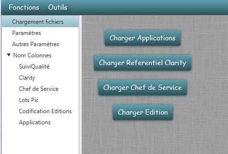

Chargement fichiers
Permet d'effectuer le chargement des données XML pour le traitement des tâches:

- Charger Applications : Charge la liste complète des applications depuis le référentiel.
Les paramètres du fichier sont dans la section "Applications" des "Noms Colonnes".
- Charger Referentiel Clarity : Charge la liste de tous les projets Clarity depuis l'extraction Excel.
Les paramètres du fichier sont dans la section "Clarity" des "Noms Colonnes".
- Charger Chef de Service : Charge la liste de tous les chefs de Services depuis l'extraction Excel.
Les paramètres du fichier sont dans la section "Chef de Service" des "Noms Colonnes".
- Charger Editions : Charge les éditions avec leurs numéro de version depuis l'extraction Excel.
Les paramètres du fichier sont dans la section "Codification des Editions" des "Noms Colonnes".